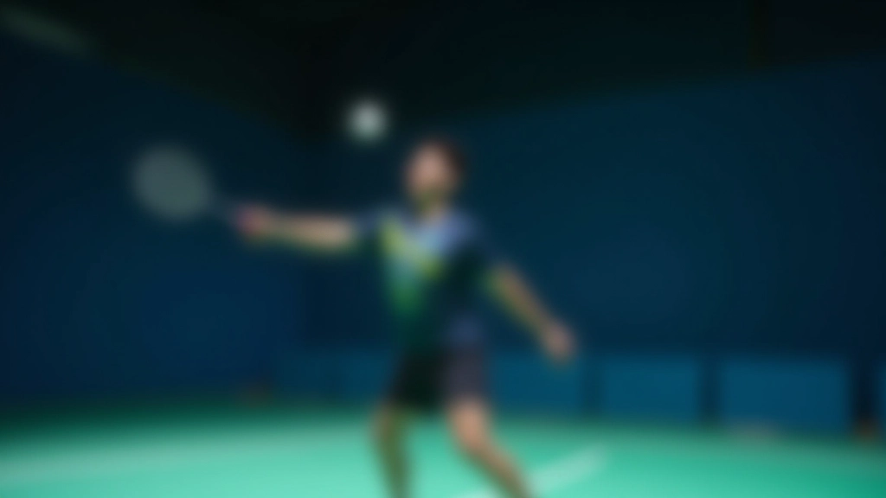
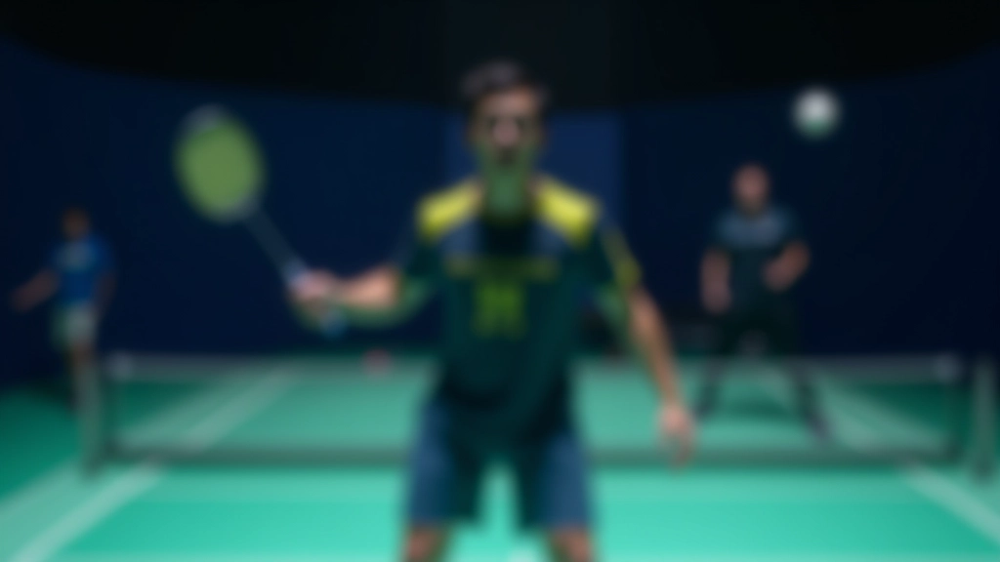
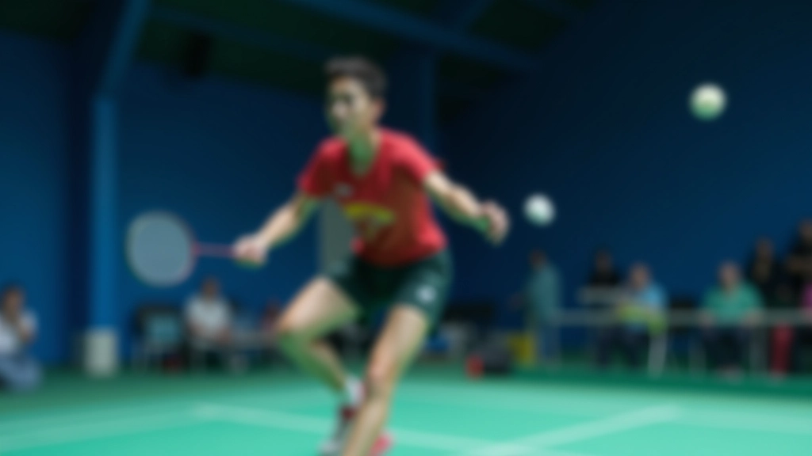
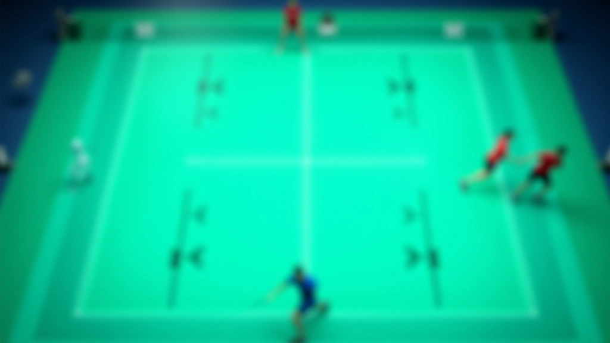
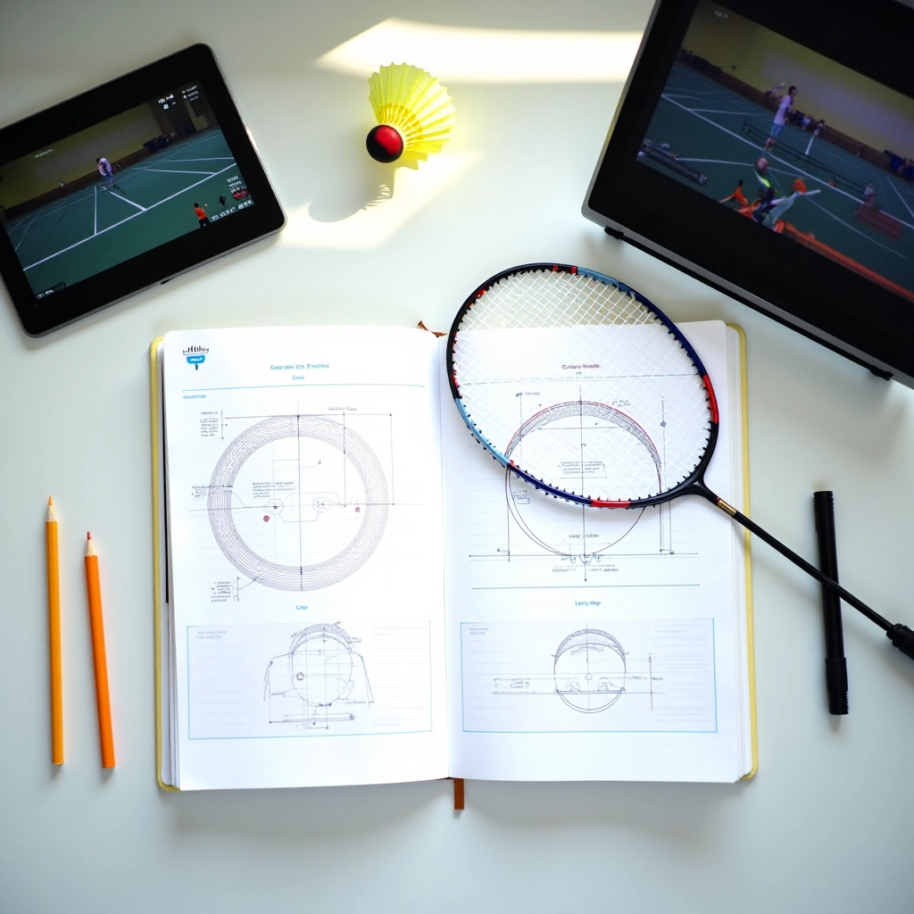

تقنيات متقدمة: إتقان الضربتين
للاعبين المتقدمين: تعمق أكثر في التفاصيل الدقيقة والحيل التي تفصل بين اللاعب الجيد والاحترافي

ما الفرق الحقيقي بين المستويات؟
الوصول للمستوى المتقدم لا يعني فقط تكرار التمارين الأساسية بسرعة أكبر. يعني فهم العلم وراء كل حركة. إنه عن السيطرة الدقيقة على زوايا الضربة والقدرة على القراءة الفورية للعبة وتوقع خطوات الخصم قبل أن يتحرك.
في هذا الدليل، نركز على التفاصيل التي لا يلاحظها المبتدئون. هذه هي الحيل التي يستخدمها اللاعبون الجيدون للفوز — ليس بقوة غير عادية، بل بذكاء وتحضير.
3 مستويات من الإتقان
ستتعلم كيفية الانتقال من "تنفيذ الحركة" إلى "التحكم الكامل" إلى "الضربة الغير متوقعة"
تفاصيل الميكانيكا
نغطي الأخطاء الشائعة التي تحد من قوتك وسرعة ردود أفعالك
استراتيجية اللعب
متى تستخدم الضربة العالية ومتى تختار اللوب بناءً على موقف اللعبة الفعلي
الضربة العالية المتقدمة: السيطرة الكاملة
الخطأ الأساسي الذي يرتكبه اللاعبون المتوسطون؟ يعتقدون أن الضربة العالية مجرد ضربة قوية. لكنها أكثر من ذلك بكثير. إنها أداة للتحكم في اللعبة بالكامل.
عندما تضرب عالياً، أنت تعطي نفسك الوقت. تسيطر على الإيقاع. اللاعب المتقدم يعرف أن الضربة ليست عن الارتفاع — إنها عن الزاوية والعمق والتوقيت. 90% من الفائدة تأتي من وضع الريشة في المكان الصحيح، وليس من ضربة أقوى.
النقطة الأساسية:
أعظم ضربة عالية ليست الأعلى أو الأقوى — إنها الضربة التي تجبر خصمك على الارتفاع فوق رأسه والتراجع للخلف في نفس الوقت. هذا يخلق مساحة للعب.
تذكر: وقفة القدمين من الخلف. كتفاك مواجهين للجانب. المرفق عالي — هذا هو المفتاح. إذا كان مرفقك منخفضاً، ستفقد كل الطاقة وستصبح الضربة ضعيفة ومتوقعة.


اللوب: الدفاع الذكي
هنا حيث يفصل الذكاء عن القوة. اللوب ليس ضربة ضعيفة — إنها ضربة استراتيجية. عندما تكون تحت الضغط، عندما يكون خصمك قريباً جداً من الشبكة، اللوب هو إجابتك.
لكن هناك فرق بين لوب عادي ولوب متقدم. اللوب المتقدم له دوران. له ارتفاع متحكم به. يسقط بسرعة كافية حتى لا يكون للخصم وقت كافي للعودة للخلف. تحتاج إلى اللعب بالزاوية والسرعة معاً.
اقرأ موضع خصمك بسرعة
ضبط حركتك — أنت تحتاج مساحة
الضربة من أسفل لأعلى بتحكم، وليس بقوة
استعد فوراً للضربة التالية
التفاصيل الدقيقة التي تغير كل شيء
هذه هي الأشياء التي لا تتعلمها من المبتدئين — وهي تصنع الفرق الحقيقي
قوة المعصم
لا تكمن القوة في الذراع — إنها في المعصم. حركة معصم سريعة وحادة تضيف السرعة والدقة. اللاعبون المبتدئون يستخدمون الذراع كلها. اللاعبون المتقدمون يستخدمون المعصم مثل الزنبرك.
الزاوية والاتجاه
الضربة الموجهة جيداً تفوز على الضربة القوية. تعلم قراءة المحكمة — أين يقف خصمك، أين تكون الفجوات، ما هو الخط المثالي. هذا يأتي من التمرين المتكرر والملاحظة.
حركة القدمين الصحيحة
أنت لا تقف وتضرب. أنت تتحرك بسلاسة، تضبط موقعك، ثم تضرب من موضع متوازن. خطوات صغيرة سريعة قبل الضربة تعني دقة أفضل وقوة أكبر وتحكم أفضل.
التوقيت الدقيق
التوقيت هو كل شيء. ضرب الريشة في أعلى نقطة للضربة العالية. الانتظار للحظة الصحيحة للوب. هذا الفرق يحسب ميلليثانية — وهو ما يفصل بين الفوز والخسارة.
ملاحظة مهمة
هذا الدليل يوفر معلومات تعليمية حول تقنيات الريشة الطائرة. كل شخص له قدرات جسدية مختلفة. إذا كنت تعاني من إصابة أو حالة طبية، استشر متخصصاً قبل ممارسة أي تمارين جديدة. التدريب المنتظم مع مدرب متخصص هو الطريقة الأفضل لتحسين أدائك بشكل آمن.
متى تستخدم أي ضربة؟
هذا هو السؤال الذي يفصل بين من يعرف التقنيات ومن يستخدمها بذكاء. الضربة العالية والاستراتيجيات لا تعني شيئاً إذا اخترت الوقت الخاطئ.
عندما يكون خصمك بعيداً عن الشبكة — استخدم الضربة العالية. أرسل الريشة عميقة. أجبره على الارتفاع والتراجع. هذا يعطيك الوقت والمساحة. لكن عندما يكون قريباً جداً؟ لا تخاطر. استخدم اللوب. ارفعها فوق رأسه. أجبره على الحركة للخلف.
"الفرق بين لاعب جيد ولاعب متقدم ليس في قوتهم — إنه في قراءتهم للعبة والقرارات التي يتخذونها في كل لحظة"

الخطوة التالية: من المعرفة إلى الممارسة
قراءة هذا الدليل هي البداية فقط. التحسن الحقيقي يأتي من الممارسة المنتظمة والمركزة. خذ كل نقطة من هنا، واختبرها في التمرينات. لاحظ ما يعمل لك. ركز على تفصيل واحد في كل جلسة تدريب — المعصم، الزاوية، التوقيت، حركة القدمين.
الاحترافيون لم يصبحوا محترفين بسبب موهبة طبيعية فقط. إنهم يمارسون بذكاء. يفهمون الأساسيات بعمق. يراقبون أنفسهم ويحسنون كل يوم. هذا يمكنك أن تفعله أيضاً.
استمر في التعلم والتطوير
عودة إلى جميع المقالات
فريق الريشة العالية التحرير
فريق التحرير والمراجعة
كتبه فريق تحرير الريشة العالية، المتخصص في تقديم تمارين عملية وسهلة المتابعة لتحسين الضربة العالية واللوب.